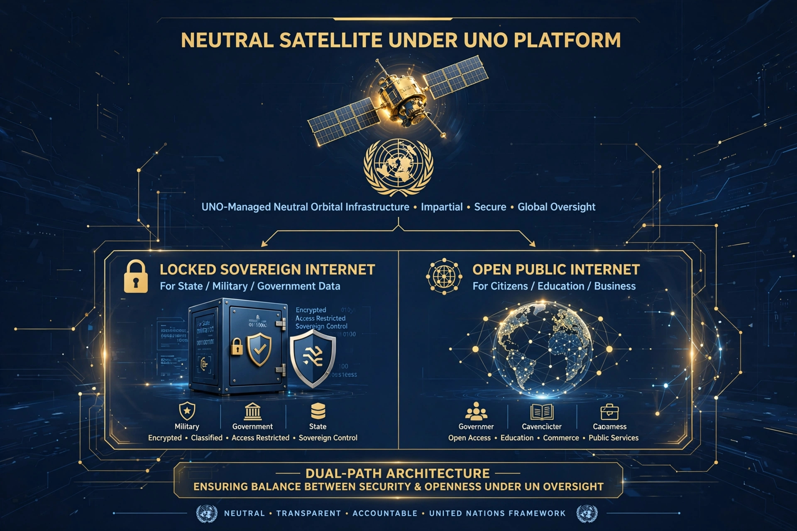

This is a professional framework developed to protect humanity from uncontrolled superintelligence. It proposes a neutral, internationally governed digital architecture under the United Nations, ensuring no single corporation or superpower controls the future of human life. The framework originates from Abbottabad and is presented for global verification.
The world runs on a single, US-controlled internet infrastructure. This creates a global single point of failure where states lose sovereignty, citizens lose privacy, and critical infrastructure remains vulnerable to cyber warfare.
Uncontrolled AGI under private corporate control will lead to Digital Colonization of all 8 billion people. Without UN governance, a few companies will decide the future of human jobs, data, and survival.
There is no international treaty that defines who controls AI, global data, and orbital internet infrastructure. This legal vacuum allows superpowers to weaponize technology against smaller nations.
• Human Sovereignty is Supreme
• No Single Nation Controls Humanity's Future
• State Data is Sacred and Locked
• Public Internet Must Remain Unblockable
• All AI Must Be Under UN Charter
The framework proposes a new UN Digital Security Council. All critical global digital infrastructure, including AI models and satellite networks, will be registered and governed under this neutral UN body, ending monopoly.

The current single-internet model cannot secure both national sovereignty and public freedom. This framework proposes:
• Locked Sovereign Internet: Dedicated for State, Military, Government Data, and Critical Infrastructure. Completely isolated and hack-proof. Head of State is the legal guarantor.
• Open Public Internet: Dedicated for Citizens, Education, Business, and Free Expression. Unblockable and open.
• Neutral Satellite Under UNO Platform: No single superpower control. Governed under UN Charter. This ends digital colonization.
Submitted: Dr SS Sheroze, Abbottabad, Pakistan